Campus Map
Click to explore!


Masjid al Zahra
Masjid Zahra is the main masjid on campus.
When the first plans for Jamea Nairobi were being drawn, Syedna Mohammed Burhanuddin RA instructed that a dedicated campus masjid be built.
He further directed that its architecture be inspired by al-Jāmiʿ al-Anwar, the historic eleventh century Fatimi masjid in Cairo which he had restored after centuries of neglect.
Jamea Nairobi’s masjid, named Masjid al-Zahra is the first in the world to be built entirely on the pattern of al-Jāmiʿ al-Anwar.
The masjid’s interiors and exteriors, specifically the mihrab and the main façade’s portal and twin minarets are taken from al-Jāmiʿ al-Anwar.
Masjid al-Zahra follows al-Anwar in its layout as well, although at a smaller scale.
Upon passing through the main portal, similar to al-Anwar’s projecting portal, a courtyard presents itself as it does in Cairo.
To the north of the small courtyard, or sahn, is the main masjid which draws parallels with al-Anwar’s bayt al-salāt or the main sanctuary prayer area.
Timber beams fixed to the ceiling and iconic pomegranate-shaped column capitals and bases are also inspired by the millennium old place of worship.
 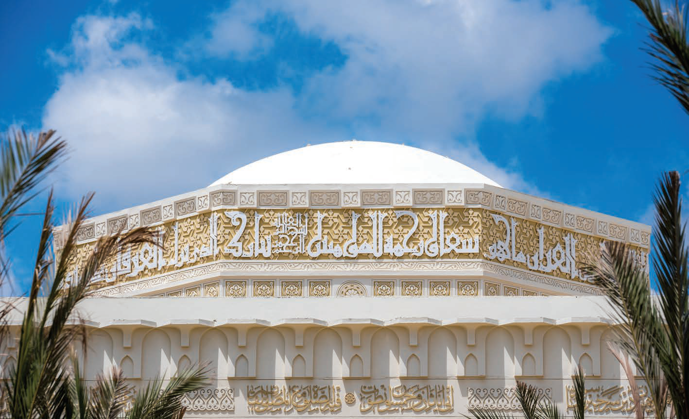
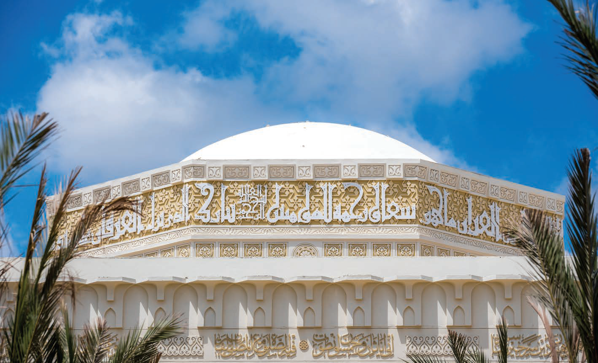
Mahad al Zahra
Given the importance of the Holy Quran in Islamic education, the rectors of Aljamea-tus-Saifiyah wished for the Mahad al-Zahra to hold a place of prominence in the Nairobi campus.
It was therefore determined that it be the campus’ primary point of entrance and for that reason, the buildings’ design is inspired by Bāb al-Nasr, the Fatimi Gate of Divine Assistance.
Like the two towers of the gate, two wings flank a central entrance above which is the Jamea’s emblem. The Fatimi gate’s stone motifs are replicated in glass frit on a striking wall of architectural glazing completing the ceremonial portal.
Behind the glass façade stands the Mahad’s grand octagonal Qāʿat (ceremonial hall) specially designed for recitation gatherings. The eight-sided structure radiates like a multi-faceted, shining jewel inside a protective glass box.
The two wings of the Mahad provide wonderful vantage points to the central garden which features various fruits and plants mentioned in the Holy Quran like other gardens of the campus. Multiple water features, both inside and outside of the Mahad, contribute to providing a peaceful and tranquil environment ideal for memorising and contemplation.
 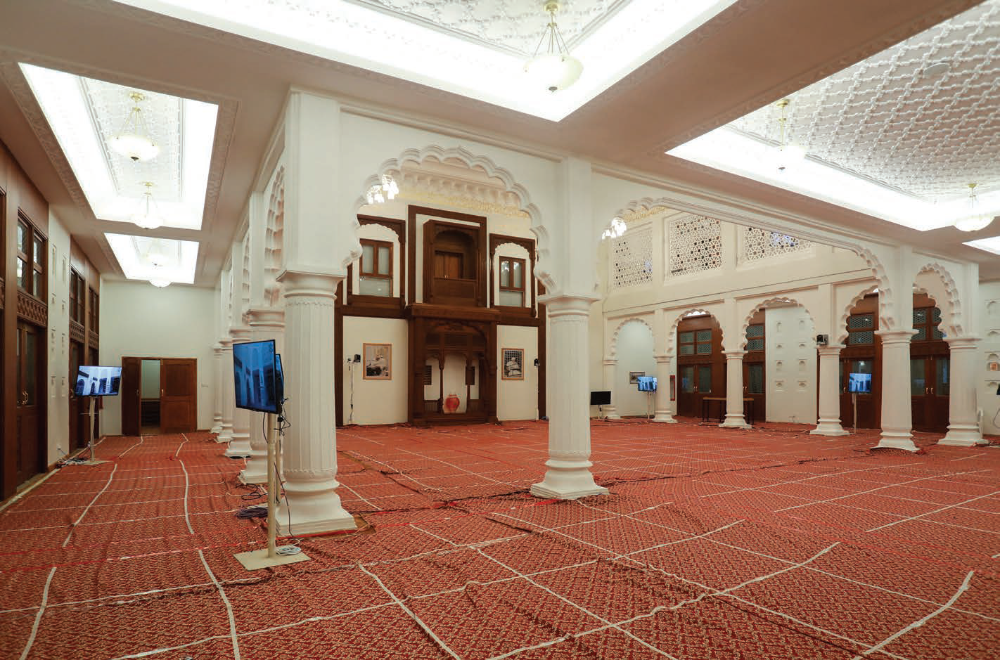
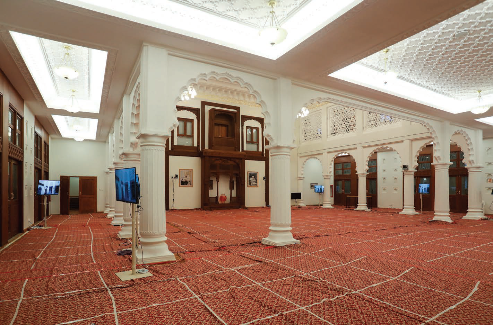
Al Iwaan al Burhani
With such a rich history and meaningful existence, His Holiness Dr Syedna Mufaddal Saifuddin TUS determined that a location in the Nairobi campus should also be designated as the Iwān to serve as a vessel that could be imbued with the spirituality, blessings and legacy of its namesake in Surat. The newly constructed Iwān of Jamea Nairobi known as al-Iwān al-Burhani honours the Surat Iwan’s history, function and architecture. A central double-heighted space supported on a series of baluster columns and scalloped or cusped arches is a throwback to the original Iwān and its iconic Mughal architecture. A second floor for women is veiled by intricate Fatimi patterns from the al-Azhar masjid, another reminder of the true origin of Aljamea’s educational legacy. A hand carved, wooden bethak, or traditional Indian seating arrangement for the Dāʿī, adorns the main wall. The bethak is inspired by a palace in Jamnagar, India, where His Holiness’ TUS ancestors would conduct sessions of learning.


Saahat
The Sāhat’s simplicity and angularity emphasize the strict adherence of a system of principles when seeking knowledge in the Fatimi tradition. The verdant spaces and trees that populate the space inform a student that through this formal adherence, paradoxically, the mind opens and is occupied by the lush flourishing that accompanies intellectual awakening. In response to the rectangular proportions of the site, the sāhat radiates outwards east-west, by means of a central ‘radiant’ axis that connects all parts of the campus and functions as its major thoroughfare. In this way, the axis is similar to Shaʿr Muʿizz li Deen Allah which has been Historic Cairo’s primary artery for centuries. With Nairobi located near the equator, this axis is also, significantly, the diurnal path of the sun as it travels over the campus. By situating the campus buildings so that they both respect the Qibla alignment and embrace the existing urban geometry, the radiant axis becomes a “ray” of sorts, widening as its moves away from the centre and heightening views in both directions. The radiance depicted in the campus’ layout symbolises how knowledge emanates from a divine, heavenly source. The movement from formal to informal spaces is further demonstrated as one navigates from the centre to the ends of the campus.

al Mawaid al Badriyah
The dining hall of Aljamea is known as al-Mawāʾid.
Students, professors, instructors and all administrative staff dine in the Mawāʾid.
In addition, faculty households are provided daily with lunch and dinner that serve three to four people.
Every day approximately three thousand individuals are served, totalling some 2.2 million meals per year.
Stress upon hygiene and balanced diet is abundant throughout Fatimi texts, which is why menus are prepared after extensive consultation with nutritionists and dieticians.
Hygiene is given utmost attention to ensure that al-Mawāʾid staff and diners remain in the best of health.
The design of the mawaid is inspired by the mausoleum of Syedna Ismaʿil Badruddin RA in Jamnagar.
The ceilings circular pattern mimics the thāl formations below.

Maktabatul Jamea
Maktabat is the main library on campus, housing a vast collection of books and resources for students and faculty.
 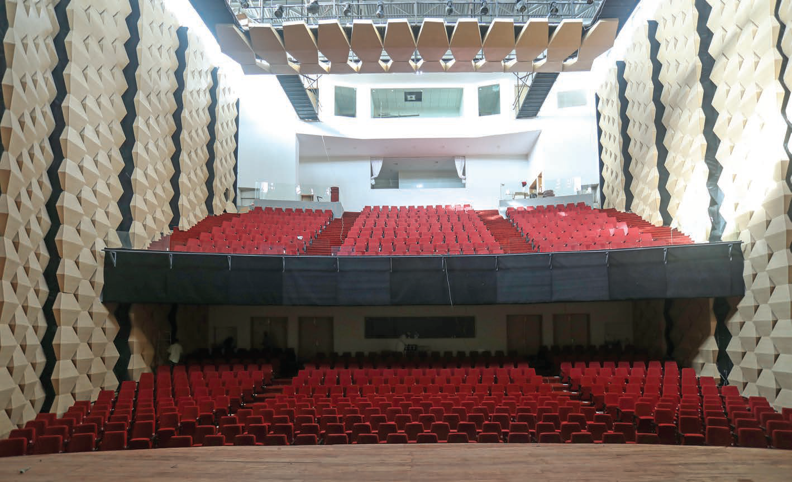
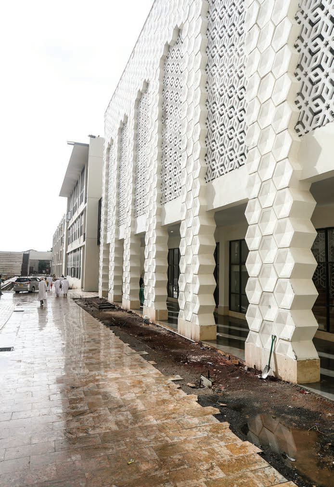
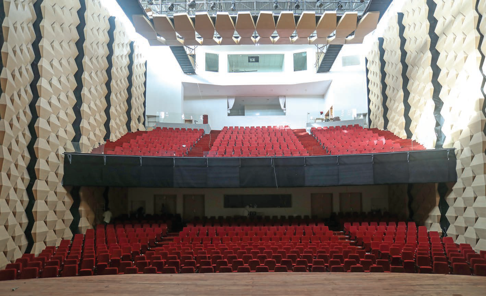
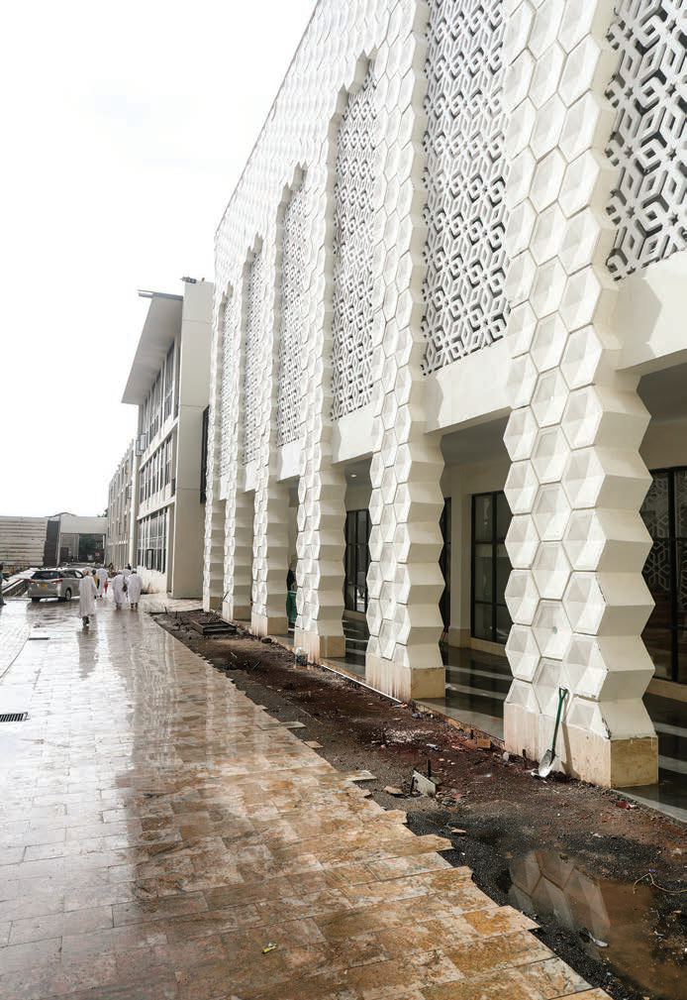
Auditorium
The location and design language of Aljamea-tus-Saifiyah’s auditorium shed light on the purpose behind the construction of one of East Africa’s grandest auditoriums. The auditorium is one of the three buildings of the campus that have been designed to be most accessible to the community, the other two being the Mahad al-Zahra and the library to the west of the auditorium. These buildings, particularly the auditorium, are Jamea’s means of communication and engagement with the Langata community and society at large. In many ways, they are the face of the institution. The auditorium has been designed to accommodate over 700 occupants, with a dedicated entrance and lobby for both Jamea and visitors from outside facilitating better circulation and egress. The fully accessible facility can cater to events such as lectures, documentary screenings, cultural programmes, short plays and band recitals. The façade’s easily recognizable, hexagonal pattern is inspired by the beehive, a tribute to the honey bee and its ability to collect nectar from a wide variety of flowers in order to produce that which is sweet and beneficial to all. Inside the massive building, the auditorium hall is clad with wooden hexagonal boxes that assist in acoustics but also resemble the bark of a palm tree, another motif that features widely throughout the campus. The auditorium is a statement: one of welcome and intrigue for the community within which Jamea has made its home and one of encouragement and confidence to the students and faculty who will use it to share their thoughts and ideas with the rest of the world.
 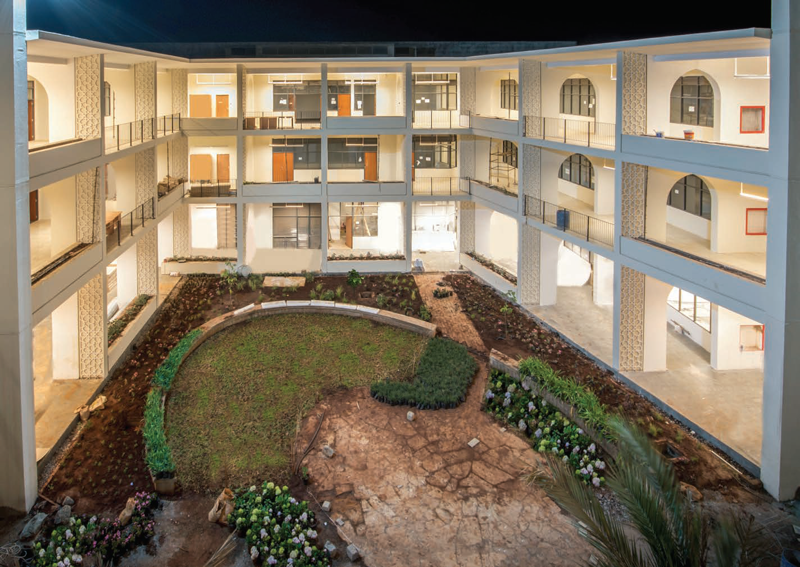
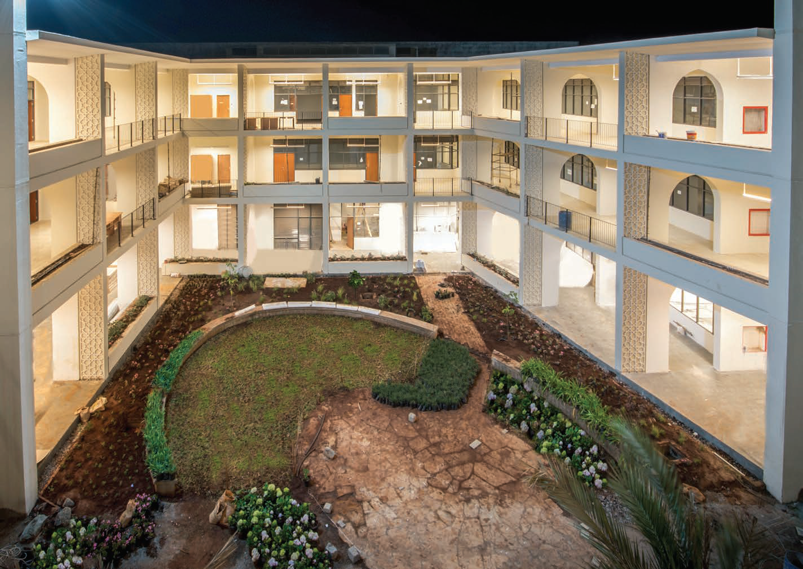
Academics
Aljamea-tus-Saifiyah Nairobi’s nearly fifty classrooms are divided between four academic buildings, each designed around a central, landscaped courtyard, reinforcing the notion of ‘Jamea in a garden’. The two buildings in the west are dedicated primarily for male students while the two in the east are for females, both pairs adjacent to the respective genders’ residences. Some of its prominent features include adjoining outdoor ‘garden’ extensions to ground floor classrooms, student lounges and an indoor breakout space with planted walls and large African tile mosaics. The layouts of the buildings and the classrooms’ large windows allow for wonderful views of the gardens internal to the buildings’ courtyards. Generally, the first floor in each building caters to the different faculty administrative offices which handle student and faculty academic affairs. The buildings are named after four bodies of water in heaven, a reference to the divine nature of knowledge: Salsabīl, Kawthar, Tasnīm and Kāfur. Salsabīl is derived from the Arabic word for ‘simplicity’. The water of this spring is clear and pure; it passes through parched throats simply and without difficulty, as should true knowledge. The river Kawthar is named after abundance and plentitude, referring to the vast oceans of knowledge. Tasnīm is derived from the Arabic word for ‘loftiness’ indicating again the divine origin of knowledge while Kāfur, or camphor as it is known in English, is named so because of the river’s fragrance.

Administration
The administration building houses the offices of the various administrative departments of the Al Jamea tus Saifiyah. This includes the registrar's office, financial aid office, and other administrative offices. This is where students go for administrative assistance.
 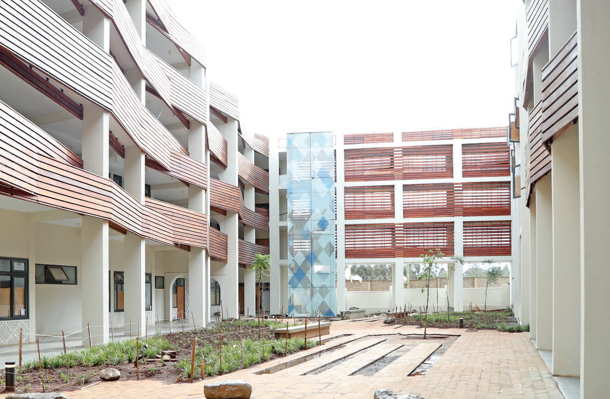
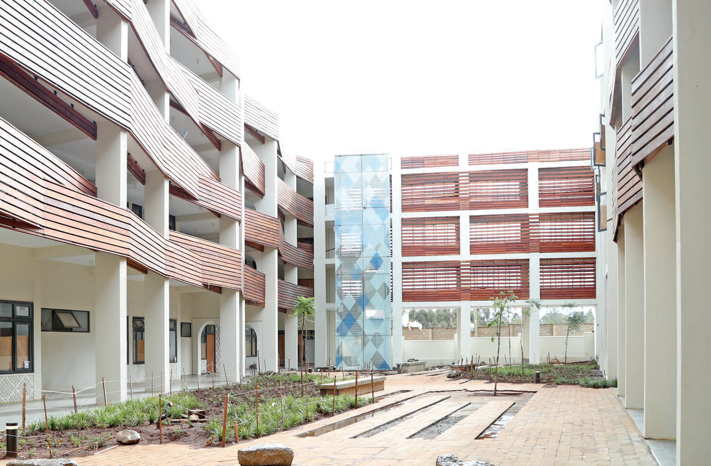
Maskan ul Rahat
Rabwat al Tawado
At Aljamea-tus-Saifiyah, living at the on-campus residences is not only an integral part of the overall experience but is an essential element of the educational process. Student living spaces are neither spartan nor ostentatious but are instead focused on providing a comfortable, homely environment where students can relax and unwind after an intense day of study. Living with other students of different ages and different cultural backgrounds affords both young and old students the opportunities to grow and develop beyond what is possible within the confines of their classrooms, let alone their hometowns. A variety of facilities are available for them within the residences including a clinic and dispensary, a dentists’ office, a small market and canteen, a barber or salon as well as a communications centre to stay in touch with families and loved ones. A sports and recreation centre is immediately adjacent to both the male and female residences where students can swim, exercise, play in the game room, or just relax on the centre’s large roof garden. At nearly 450,000 square feet, the male and female residences make up more than half of the campus’ area and indicate that Jamea is truly a residential campus where learning and development occur all throughout.